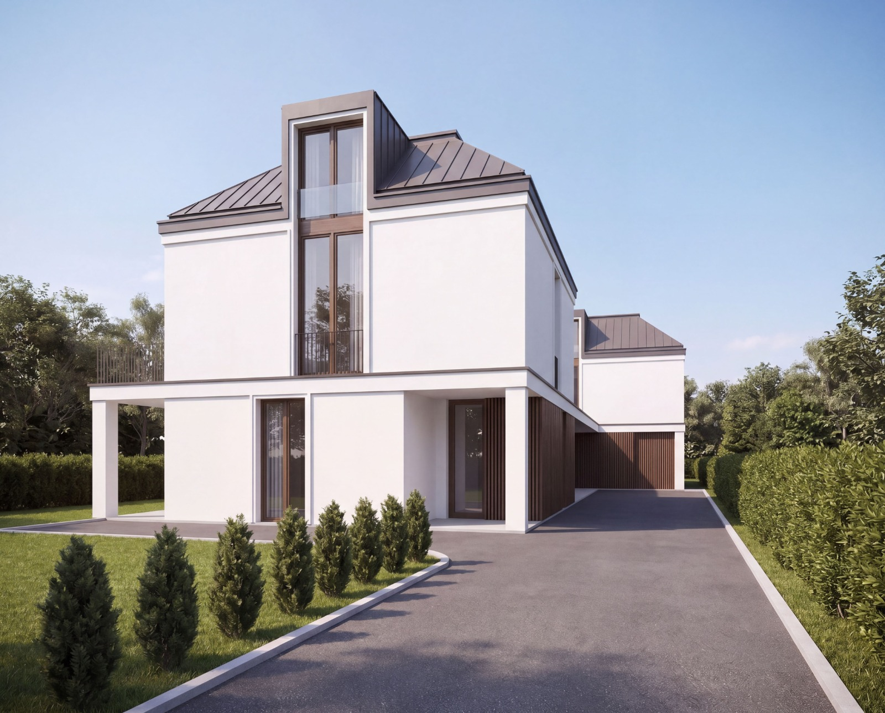
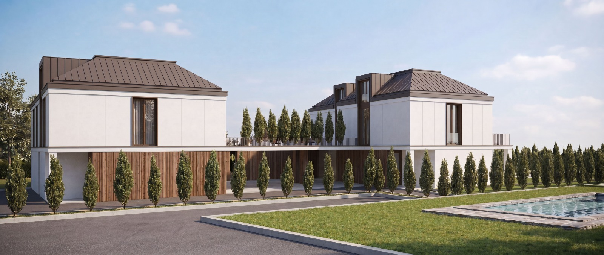
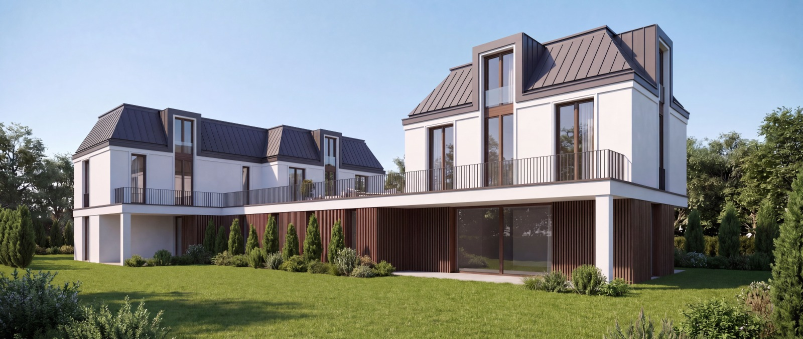
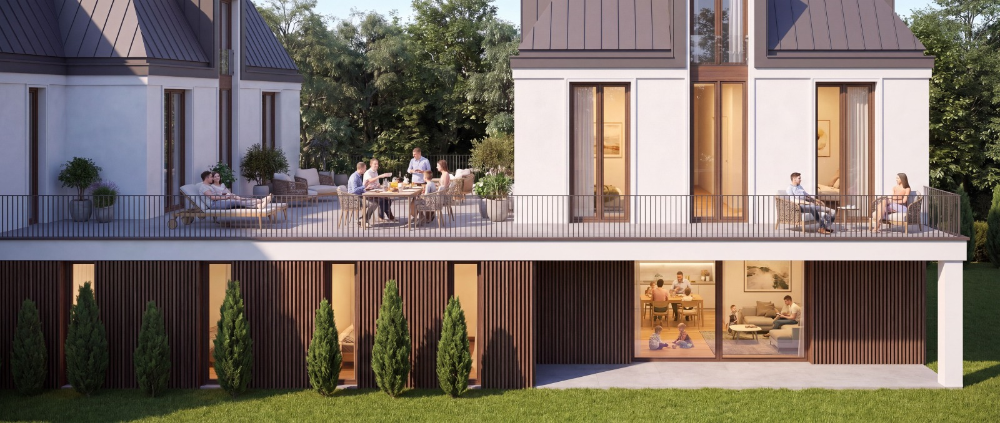
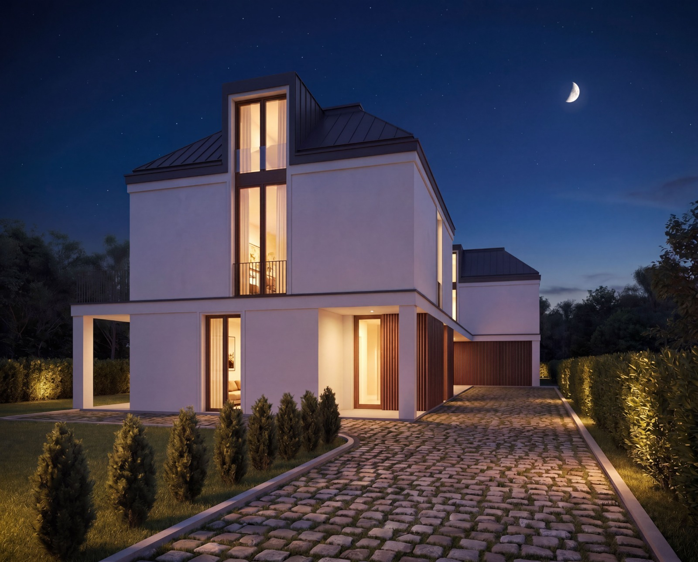
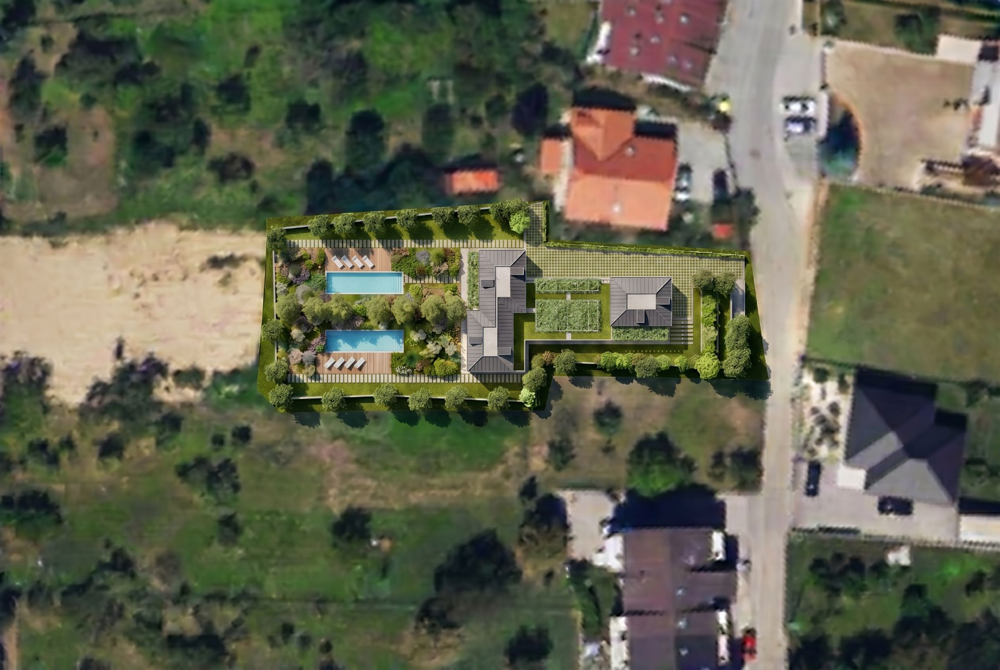

Dvije moderne vile smještene na ograđenom imanju s privatnim bazenima, njegovanim vrtovima i alejom čempresa. Čisti volumeni, fasade u toplim bijelim tonovima, tamni limeni krovovi i drvene lamele stvaraju arhitekturu koja spaja suvremeni izraz i trajnu vrijednost.





